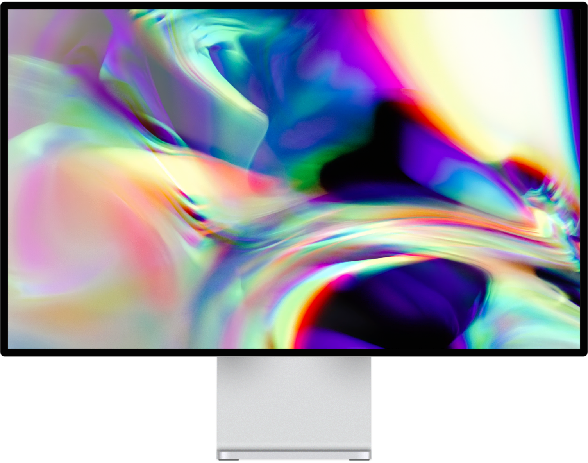

Gensync
An AI-powered platform that brings seniors and young learners together for real conversation and shared learning.

An AI-powered platform that brings seniors and young learners together for real conversation and shared learning.
Data from the World Health Organization shows that around 25% of older adults globally face social isolation. A 2024 national survey also found that 33% of older adults often feel lonely.
This shows that many elderly people lack companionship and opportunities to be heard. At the same time, we observe that modern youth often use trendy internet slang, which older people struggle to understand. On the other hand, the elderly tend to speak in a detailed manner that younger people find hard to follow.


Built with modern web technologies and AI integration, Gensync provides a seamless experience for both seniors and young learners.
Experience Gensync in action. Watch how it bridges the generation gap through AI-powered conversation.
→ View Code